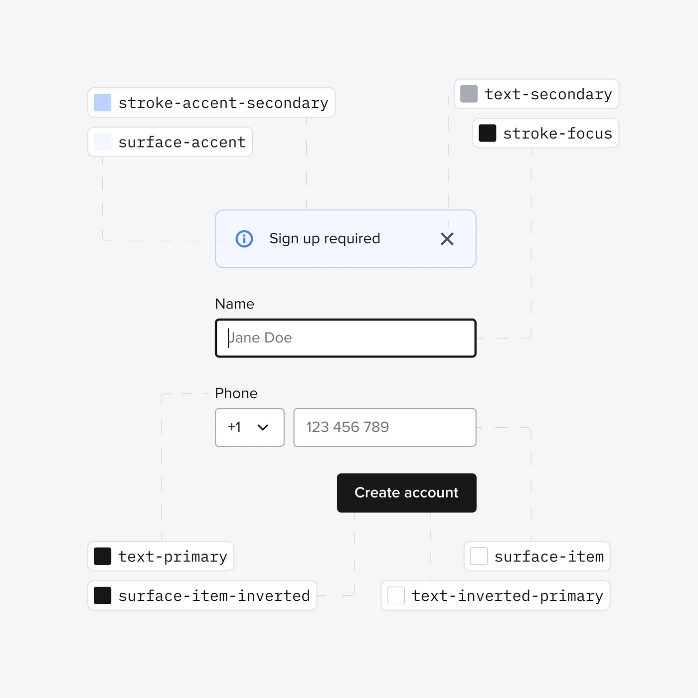
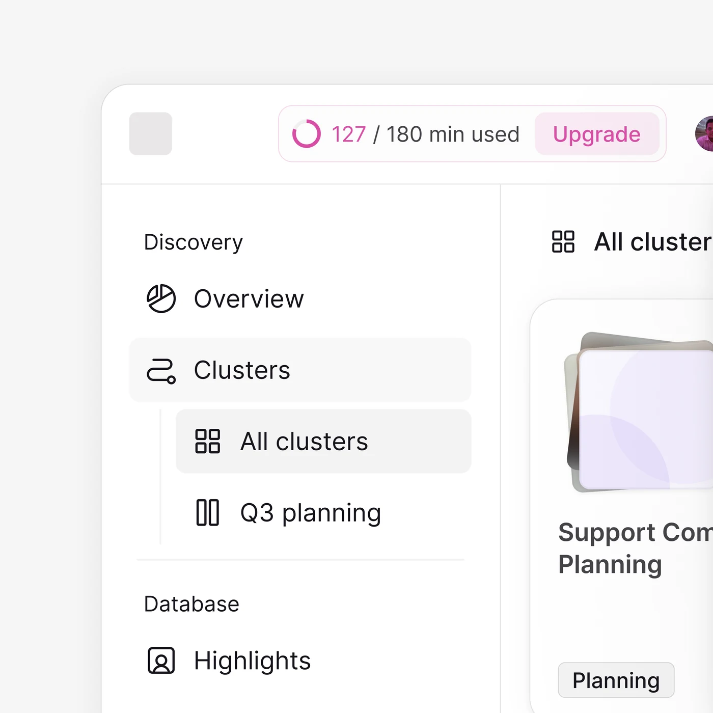
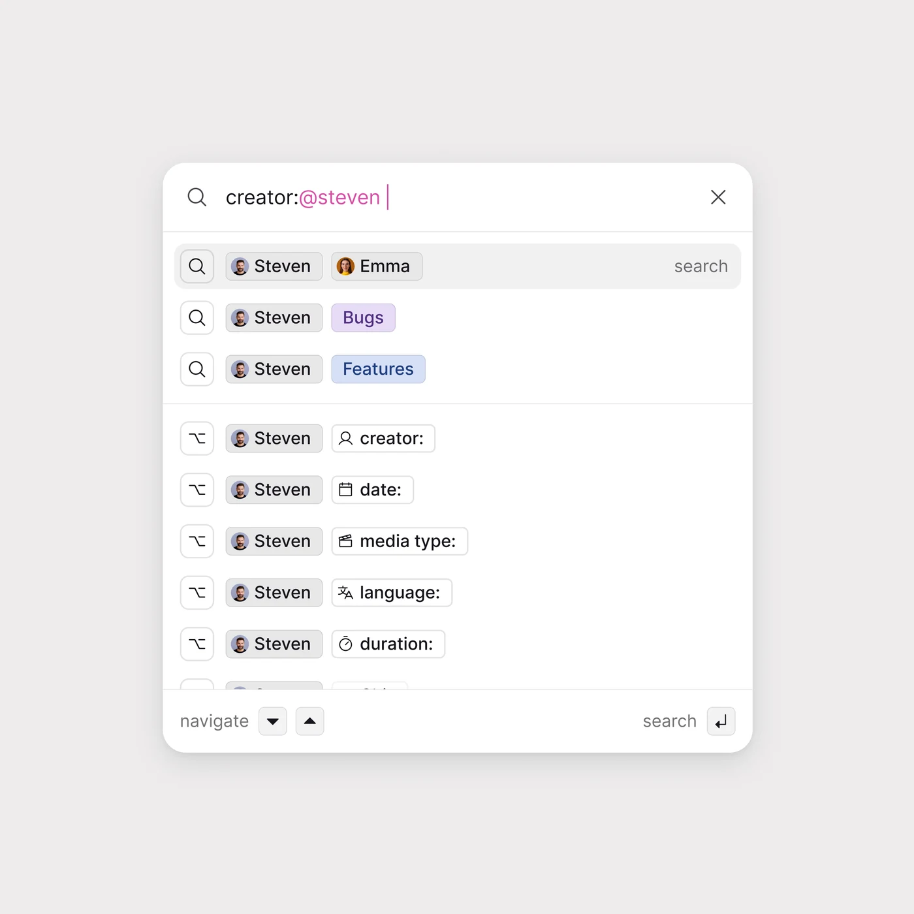

Component rules that people and AI follow, in 50+ shipped features
Vibe coding changed who builds at HoneyBook. PMs prototype, designers open PRs, and LLMs generate UI. That changes what a design system is for: HBUI now serves people and AI alike, and both need it to be unambiguous.
Across the library, components overlapped in look and purpose, with no written meaning behind them. Tags, chips, badges and statuses were the clearest example: people used them interchangeably, and an LLM couldn't tell them apart. I gave every component a distinct role and contract and aligned the visuals to match. A Badge is a system-assigned descriptor, a Status a step in a lifecycle, a Tag a user-defined category. Then I restructured the guidelines as data with a shared, plain-language vocabulary. That made one source of truth: a Storybook page for people and a rules file for agents.
Design now scales beyond the design team: 50+ features have shipped on the right components. Misuse gets caught in review, and generated code builds on HBUI instead of public libraries.

Three boards, one kanban system
The Pipeline is home base for HoneyBook members, but it was an outdated table posing as a pipeline. Projects, contacts and tasks all needed a board, each owned by a different team with its own opinions.
Instead of designing three boards, I designed one system. The key insight was that columns are just a property, like a project's stage, a task's status or a lead's source, so moving a card changes that value. I mapped card properties by behavior so interactive parts never clash with content. I also designed every interaction state, from drag and bulk select to sort constraints and columns that can't accept an item.
The Pipeline was rebuilt on it and shipped with no custom one-offs in the code. Members responded warmly, and the same component now serves other domains.


Three token layers that made dark mode a token swap
The foundations under a design system decide how far it can scale. I set up a token structure that moves visual decisions into one layer the whole product draws from.
It has three layers. Primitives hold raw values. Semantic tokens name those values by purpose, such as secondary text or an accent surface. Components only ever use semantic tokens. Accessibility lives in the foundation instead of being patched per component, and light and dark mode is a token swap: same components, different values.
The result makes design decisions easier to change, scale and keep aligned across teams. It's the groundwork for a system that evolves with less friction.

Onboarding that gets users to value sooner, part of 50%+ ARR growth
NEXT helps product teams turn customer research into what to build next. New users signed up, but many never reached the moment where the product proved its value, so upgrading rarely made sense to them.
I tested three ideas in fast iterations:
- A vertical view of the process that mirrors how teams work. This became the side navigation, with results brought forward for impact-driven PMs.
- A clear starting point that always invites new users to add their own data.
- A visible incentive to upgrade, placed right where users see the value.
More new users uploaded their own data early on, and the upgrade prompt became a steady source of sales conversations.

Research synthesis in minutes instead of hours
NEXT turns large research datasets into patterns teams can act on: collect data, highlight what matters, and cluster it into insights. My goal was to let people focus on what their data says, not on organizing it.
Actions appear only when they're useful: selecting highlights reveals grouping actions right where people expect them. A live cluster preview lets people add insights without memorizing every pattern, and faces and images make text-heavy research easier to scan. Insights connect to business metrics in interactive charts, built around how customers already report.
Pattern finding became something people discover naturally, and teams could prioritize their biggest opportunities first.

One search for quick lookups and complex queries
Research bases hold huge amounts of data with countless properties. Search is a simple idea but a difficult reality: it had to handle complex queries while staying approachable.
I studied familiar patterns like Spotlight and ⌘K menus, then defined NEXT's own use cases with engineering. The search supports syntax for power users, like "creator:" and "date:", while chips show categories and values visually, so nobody has to learn the syntax.
One search now handles both quick lookups and complex queries. Nearly every decision had a real technical cost, so each one is backed by a clear UX rationale.